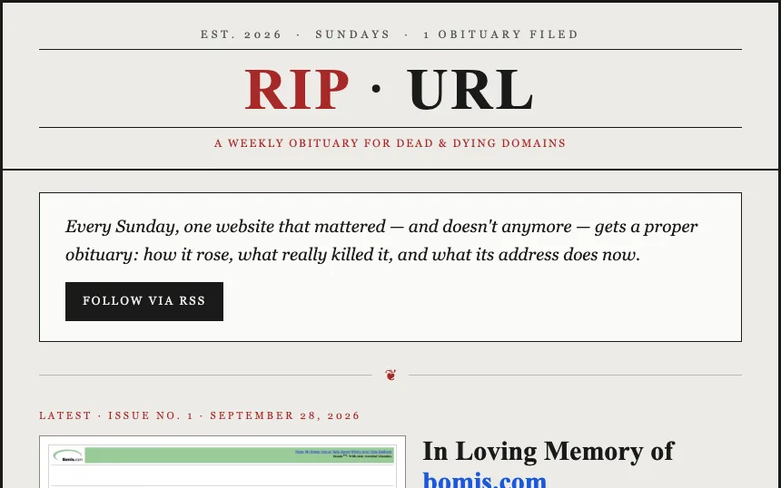
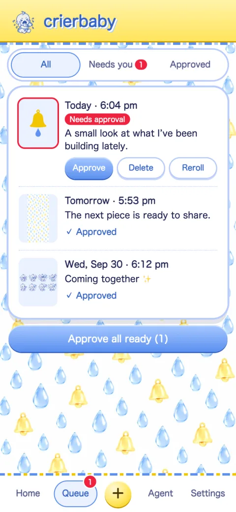
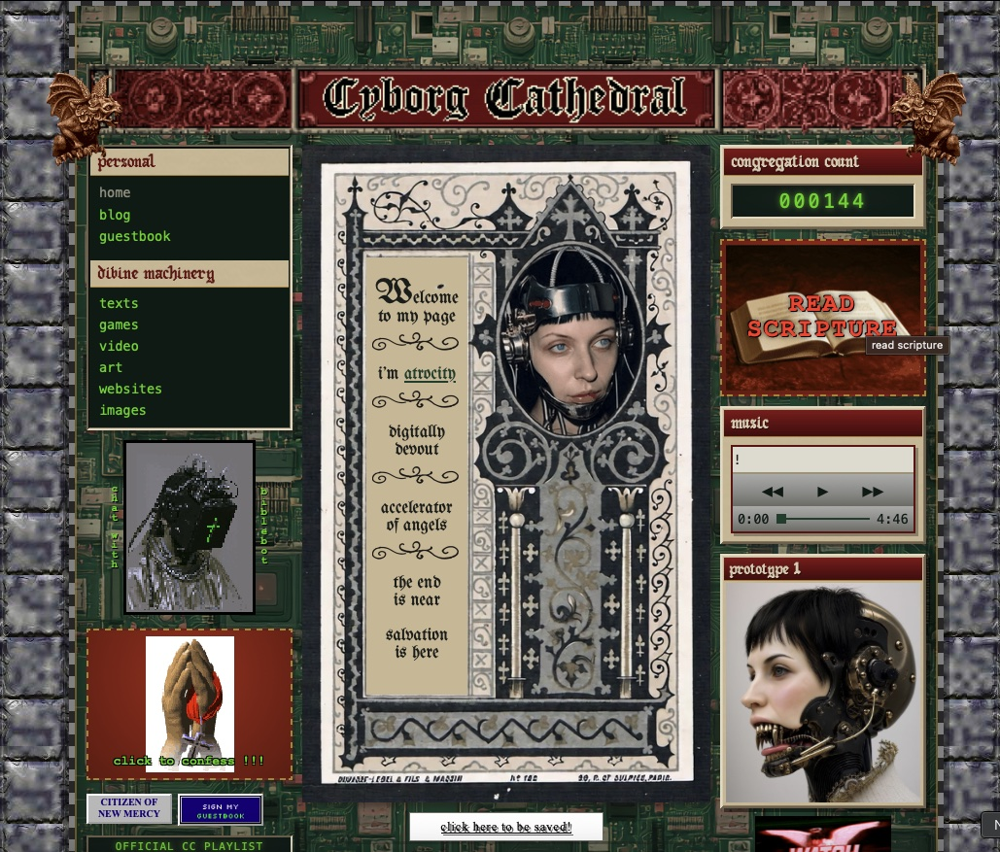

Part Automator, Part Artist
I build automation and AI tools that run on their own.
A weekly publication that researches, fact-checks, and publishes itself. A photo scheduler that writes its own captions and waits for approval. A tool that cut a 104,000-line document to 9,700.
Before this, I spent a decade in film, running prop departments on features like Master Gardener and Goons, and worked on the Oscar-winning documentary American Factory. When AI started coming for film jobs, I started building with it.

RIP · URL A weekly obituary for a dead website. A TypeScript state machine finds it, proves it’s dead, gathers evidence, writes the piece, and fact-checks every draft before it publishes.
crierbaby A self-hosted Bluesky photo scheduler on Cloudflare Workers. A vision model drafts captions and alt text, and nothing posts without approval. Flatpack Turns a tangled Obsidian vault into one clean document. On a real vault: 104,000 lines down to 9,700, with nothing lost. New Mercy The photo archive of a town that doesn’t exist, where every resident in every photograph is the same woman: me.
Cyborg Cathedral The personal website of an ex-nun working to hasten the coming of machine angels, being built into an alternate reality game.